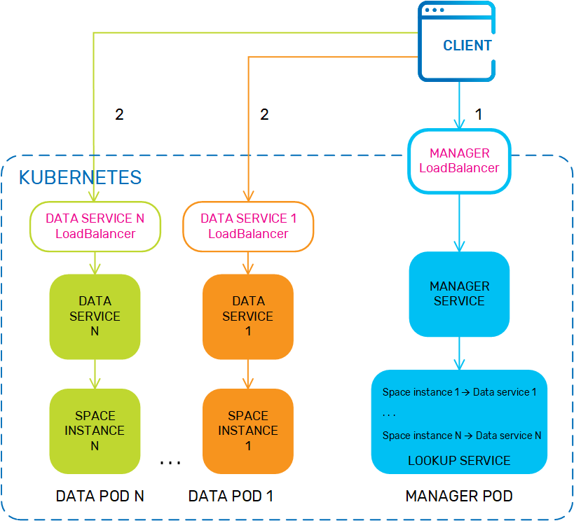
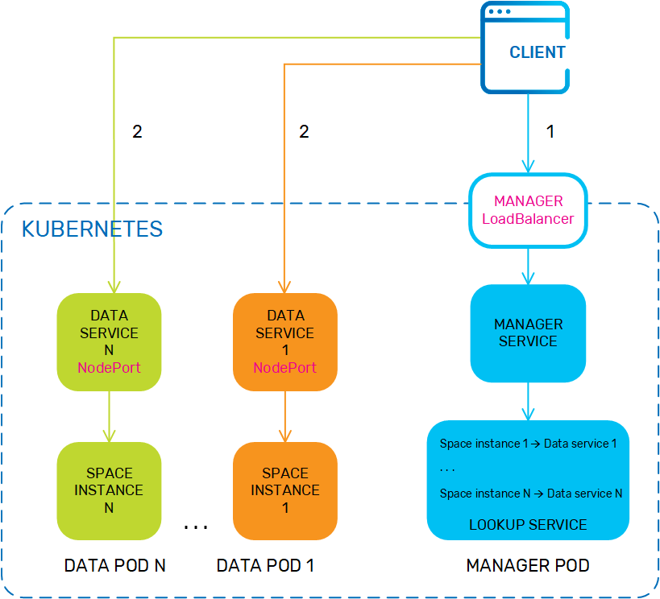
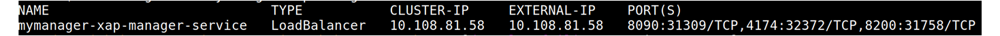

As part of the basic functionality of a
For more information about Space-based remoting, see the
When deployed on Kubernetes, the server side is isolated, and external access is provided via Kubernetes services. In order to enable Space-based remoting, namely a proxy that communicates with the server (data grid in the Kubernetes cluster), you need to do the following:
manager service (which sits inside Kubernetes)External access is provided via the pod URL, which contains either the port value that was defined for the service, or the node port value (which can be either random or assigned).
Notify containers and local view are not currently supported.
You may have to modify the service (pu) section of the Helm chart depending on whether you are in a development or a production environment, and the scale of your cluster. You can also enable or disable Space-based remoting by changing the value of the LRMI process in the pu section of the Helm chart.
You only have to select the service type if you intend to use the node port, as the
As explained in the
The following sections provide more details about each service type.
This is the default service type for both the Manager and the service. The load balancer is external to the pod and sits outside the cluster. On startup, Kubernetes creates a load balancer for each service that provides remote access as follows:
In Space-based remoting, every Space instance is exposed as a service. In high availability configurations this can lead to a large number of load balancers; for example, a single 4-partition service is seen by Kubernetes as 8 services and therefore requires 8 load balancers because in high availability configuration each primary Space instance has a backup instance. This can lead to high costs in the cloud.

LoadBalancer is the default configuration for KubeGrid, so there is no need to specify a service type when installing the Helm chart. For example, you can install
helm install insightedge-pu --name testspace --set manager.name=testmanager,service.lrmi.InitialNodePort=31200
helm install testspace insightedge-pu --set manager.name=testmanager,service.lrmi.InitialNodePort=31200 helm install insightedge-pu --name testspace --set manager.name=testmanager,service.lrmi.InitialNodePort=31200The NodePort service type exposes each service on a specific node port that can be assigned randomly, or specified when you install the Helm chart. When using the NodePort service type, the pod registers in the LUS with the assigned IP address.
The problem with specifying node ports is that pods may move to different nodes during runtime, for example if the current node crashes. This means that they then have different node port values and services can't find the pods on the new nodes. Additionally some cloud services such as Amazon AWS require setting firewall rules that open node ports explicitly in order to support remote client access.
To resolve these issues, the service (pu/values.yaml) section of the Helm chart contains an additional value called initialNodeport for the LRMI. By default, this property is empty and Kubernetes assigns a node port randomly for each servic,e using the range 30000-32767. If you want to specify the node ports rather than expose the entire range, you can specify the initial port number and

NodePort isn't the default service type, so you need to specify it when you install the Helm chart. For example, see the following Helm install command:
helm install insightedge-pu --name testspace --set manager.name=testmanager, service.type=NodePort, service.lrmi.InitialNodePort=31200
helm install testspace insightedge-pu --set manager.name=testmanager, service.type=NodePort, service.lrmi.InitialNodePort=31200 helm install insightedge-pu --name testspace --set manager.name=testmanager, service.type=NodePort, service.lrmi.InitialNodePort=31200This option requires exposing the assigned ports to external access. You also have to ensure that the assigned ports aren't being used by another service in your cluster.
On the server side, each Space instance must be exposed as a service. To do this, set the service.lrmi.enabled value to true. For example, see the following command:
helm install insightedge-pu --name testspace --set manager.name=testmanager,service.lrmi.enabled=true
helm install testspace insightedge-pu --set manager.name=testmanager,service.lrmi.enabled=true helm install insightedge-pu --name testspace --set manager.name=testmanager,service.lrmi.enabled=trueWhen Space-based remoting is enabled, each Space instance has its own dedicated Kubernetes service, which can result in a high resource requirements. If the service type is loadBalancer, you should disable the lrmi in the service Helm chart when Space-based remoting is no longer required,
The
The manager service exposes three processes:
api - REST Manager API, which is used to administer Space-based operations.lus - Lookup service for the data grid.lrmi - Communication protocol between Spaces and The LUS and the LRMI are enabled by default in the manager service, so they are available to the remote client without any additional configuration.
It is strongly recommended not to change this configuration.
As explained above, the nodePort value is undefined by default.
You can view the services and ports for each service using the following command:
kubectl describe svc <service name>When you create the Space proxy in the remote client, you should use the external IP address that is exposed in Kubernetes. You can retrieve the external IP address and ports using the following command:
kubectl get svcThis generates the following output:

For example, your Space proxy may look like this in the client:
GigaSpace gigaSpace = new GigaSpaceConfigurer(new SpaceProxyConfigurer
("testspace").lookupLocators(“10.108.81.58:8090”)).gigaSpace();For more information about creating a Space proxy, see
In non-Kubernetes environments,
Simple class loading is supported in all environments - on-premise, cloud, and hybrid.
To configure your com.gs.transport_protocol.lrmi.simple-classloading system property to true.
for more information about the LRMI system properties, see the LRMI Configuration section of the